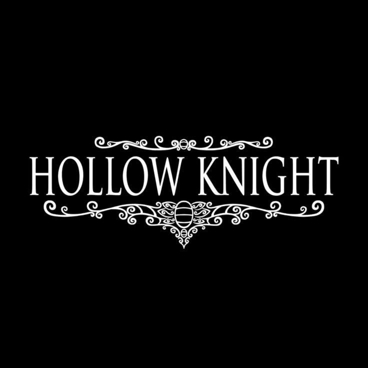
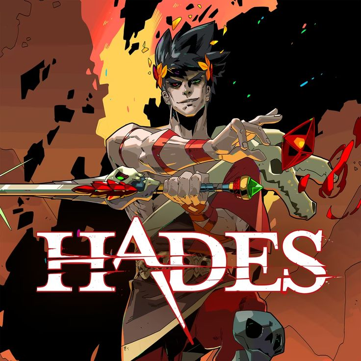
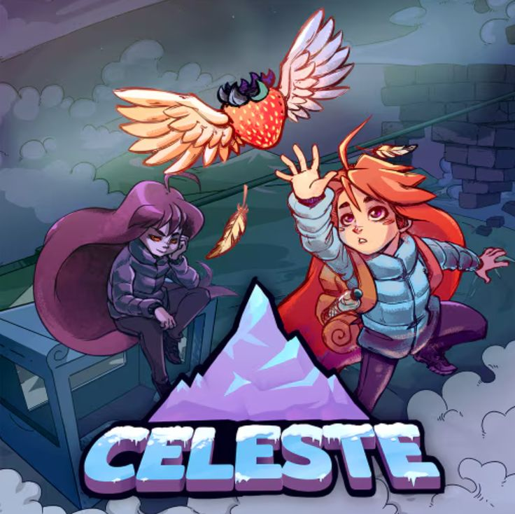

Por que jogar indies
Estúdios pequenos arriscam em ideias novas, estilos visuais únicos e narrativas pessoais que o mercado grande raramente tenta.
Seu ponto de apoio no mundo dos games
Estúdios pequenos arriscam em ideias novas, estilos visuais únicos e narrativas pessoais que o mercado grande raramente tenta.
Gráficos em pixel art ou desenhados à mão, trilhas marcantes e preços acessíveis.
Acompanhe festivais de jogos, promoções em lojas digitais e comunidades que indicam lançamentos independentes.

Aventura de exploração 2D em um reino de insetos, com combates desafiadores e visual desenhado à mão.

Roguelike de ação em que você tenta escapar do submundo grego, com combate rápido e história que avança a cada tentativa.

Plataforma 2D sobre escalar uma montanha, com fases difíceis e uma história sobre superação.